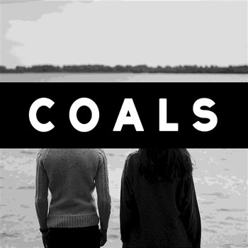
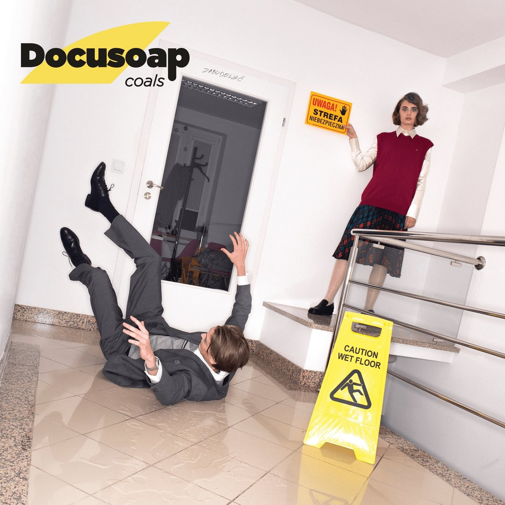

Zespół Coals
„Marzycielski, eteryczny pop czerpiący na równi z elektroniki i elementów folku”- The Quietus

"Homework"- 2014, pierwsza epka, w jej skład wchodzą 4 utwory, nasiąknięta sennym folkowym klimatem, pełna wyrwanych z zaświatów wokaliz, a w całości radiowo lekka

"Tamagotchi"- 2017, znaczący postęp względem poprzednika, pełna nostalgii, przepełniona vibe lat 80., 90., jednocześnie podszyta cloud rapowymi beatami.

"Docusoap"- 2019, znaczący postęp względem poprzednika, pełna nostalgii, przepełniona vibe lat 80., 90., jednocześnie podszyta cloud rapowymi beatami.